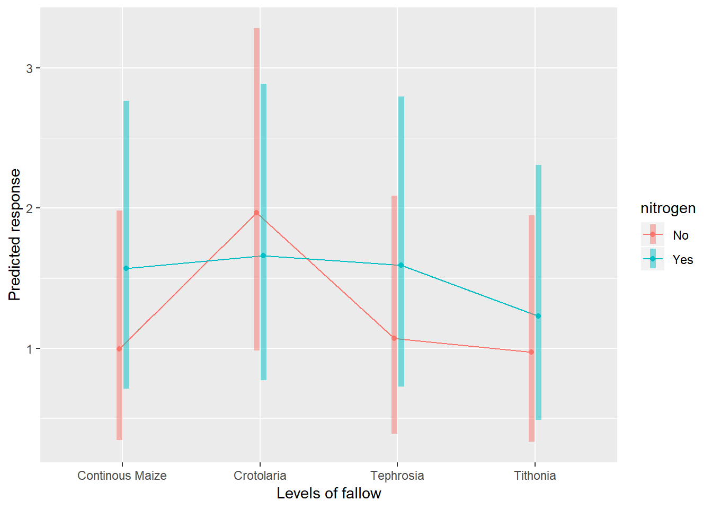

Chapter 4 Split Plot Designs
Aim: make it easy to do standard analysis of standard experimental designs used in field trials Assumptions: you know some basic R, have R and RStudio already installed on your compuiter and you are familiar with the standard analyses of field trials.
This document will focus initially on the simple analysis of a split plot design trial using R. Section 1 provides the steps used to produce the analysis; Section 2 provides some commentary on how these commands work, what output is created, and why these commadns were chosen; Section 3 deals with aspects of the statistical methodology.
It would be beneficial to also read through Part 1 in this series, analysis of RCBD single factor experiments. You may notice many similarities in the R syntax used in these guides.
4.1 About the data
The data for this example involves a split plot designed experiment. Treatments are 4 cropping patterns, and two nitrogen levels. The design is a split Both N and P could limit maize growth in the –N subplots, whereas N will not limit maize growth in the +N subplots. The comparison of +N and –N subplots within a mainplot will assess whether the fallows have eliminated N deficiency for maize.
Differences in maize yield among treatments for the +N subplot will result from differences in P plus “fallow benefits” to maize. Differences in maize yield among treatments for the -N subplot will result from differences in N plus P plus “fallow benefits” to maize.
The following steps were followed to generate the output in this document. The data was organized in excel rectangle columns with the different variables appearing in excel columns. All data checks were done in excel, meaningful data was selected and a copy of this data file was stored as a CSV file to make data import easy in R. The data file used in this analysis can be downloaded here: https://bit.ly/2rfLBEt
4.2 Section 1: Steps in analysis using R
- Install R packages needed
library(ggplot2)
library(emmeans)
library(doBy)
library(lmerTest)
library(multcompView)- Import data
fphosphorus <- read.csv("C:/Users/Admin/Desktop/FPhosphorus.csv")- Check and update data
summary(fphosphorus)
str(fphosphorus)
fphosphorus$mainplot<-factor(fphosphorus$mainplot)
fphosphorus$subplot<-factor(fphosphorus$subplot)
fphosphorus$block<-factor(fphosphorus$block)- Explore data
ggplot(data=fphosphorus,aes(y=grain,x=fallow))+geom_boxplot(aes(colour=nitrogen))
summaryBy(grain~fallow+nitrogen, data=fphosphorus, FUN=c(mean,sd))- Specify a model for data
splitplotmodel1<-lmer(grain~fallow*nitrogen+(1|block/mainplot), data=fphosphorus)- Check the model
plot(splitplotmodel1)
qqnorm(resid(splitplotmodel1))
qqline(resid(splitplotmodel1))
splitplotmodel2<-lmer(sqrt(grain)~fallow*nitrogen+(1|block/mainplot), data=fphosphorus)
plot(splitplotmodel2)
qqnorm(resid(splitplotmodel2))
qqline(resid(splitplotmodel2))- Interpret the model
anova(splitplotmodel2, ddf="Kenward-Roger")
print(VarCorr(splitplotmodel2), comp=("Variance"))- Present the results from the model
emmip(splitplotmodel2,nitrogen~fallow,CIs = TRUE,type="response")
emmeans(splitplotmodel2,~fallow,type="response")
cld(emmeans(splitplotmodel2,~fallow,type="response"))4.3 Section 2: Explanation of Steps
4.3.1 1. Install R packages needed
A number of packages following packages were used during data exploration and analysis. For a general introduction explaining what R packages are and how they work, this is a really useful guide https://www.datacamp.com/community/tutorials/r-packages-guide. For each of these packages to be installed, using install.packages(), this requires a reliable internet connection and a correctly installed version of R and RStudio. If you are having difficulties installing these packages please ask for help.
install.packages("ggplot2")
library(ggplot2)ggplot2 This package provides a powerful graphics language for creating elegant and complex graphs in R.
install.packages("emmeans")
library(emmeans)emmeans Estimated marginal means (also known as least squares means) helps provide expected mean values and confidence intervals from statistical models.
install.packages("doBy")
library(doBy)doByAllows easy production of summary statistic tables
install.packages("lmerTest")
library(lmerTest)lmerTest Allows produce of flexible mixed effects regression models, similar to REML in Genstat.
install.packages("multcompView")
library(multcompView)multcompView allows for mean seperation methods on analyses
4.3.2 2. Import data
Our data set saved as a CSV file, so we can use the read.csv commmand to import the data. We are going to assign the name of the data with R to be fphosphorus. Remember in R Studio you could also use the “Import Dataset” menu to import a dataset.
fphosphorus <- read.csv("C:/Users/Admin/Desktop/FPhosphorus.csv")4.3.3 3. Check and update data
When reading data into R it is always useful to check that data is in the format expected. How many variables are there? How many rows? How have the columns been read in? The summary command can help to show if the data is being treated correctly.
summary(fphosphorus)## farmer block mainplot subplot
## BTS-10 : 8 Min. :1 Min. :1.00 Min. :1.0
## BTS-10B: 8 1st Qu.:3 1st Qu.:1.75 1st Qu.:1.0
## BTS-18 : 8 Median :5 Median :2.50 Median :1.5
## BTS-25 : 8 Mean :5 Mean :2.50 Mean :1.5
## BTS-27 : 8 3rd Qu.:7 3rd Qu.:3.25 3rd Qu.:2.0
## BTS-32 : 8 Max. :9 Max. :4.00 Max. :2.0
## (Other):24
## fallow nitrogen grain striga1
## Continous Maize:18 No :36 Min. :0.00 Min. : 7.00
## Crotolaria :18 Yes:36 1st Qu.:0.60 1st Qu.: 86.75
## Tephrosia :18 Median :1.25 Median : 323.50
## Tithonia :18 Mean :1.70 Mean : 582.04
## 3rd Qu.:2.40 3rd Qu.: 852.25
## Max. :5.30 Max. :2999.00
##
## striga2 striga3 striga4
## Min. : 2.00 Min. : 0.0 Min. : 0.0
## 1st Qu.: 13.75 1st Qu.: 10.0 1st Qu.: 17.0
## Median : 137.50 Median : 29.5 Median : 172.0
## Mean : 566.11 Mean : 84.4 Mean : 337.7
## 3rd Qu.: 926.00 3rd Qu.: 78.5 3rd Qu.: 448.5
## Max. :2645.00 Max. :1208.0 Max. :1406.0
## NA's :32Where data is being treated as a numeric variable (i.e. a number) summary provides statistics like the mean, min and max. Where data is being treated like a categorical variable (i.e. a group) then summary provides frequency tables.
From the results we can see that the variables block, mainplor and subplot are being considered as numeric variables. However these are grouping variables, not number variables, the numbers used are simply codes. If we do not rectify this then our analysis later will be incorrect and meaningless.
This can also be seen more explicitly using the str() function.
str(fphosphorus)## 'data.frame': 72 obs. of 11 variables:
## $ farmer : Factor w/ 9 levels "BTS-10","BTS-10B",..: 1 1 1 1 1 1 1 1 2 2 ...
## $ block : int 7 7 7 7 7 7 7 7 8 8 ...
## $ mainplot: int 1 1 2 2 3 3 4 4 1 1 ...
## $ subplot : int 1 2 1 2 1 2 1 2 1 2 ...
## $ fallow : Factor w/ 4 levels "Continous Maize",..: 1 1 4 4 2 2 3 3 3 3 ...
## $ nitrogen: Factor w/ 2 levels "No","Yes": 1 2 2 1 2 1 2 1 1 2 ...
## $ grain : num 0.8 3 2.2 2.4 1.2 3 0.9 4.1 0.4 0.5 ...
## $ striga1 : int 1438 1340 482 340 98 90 232 120 2854 1715 ...
## $ striga2 : int 1736 960 2092 660 680 921 2645 1033 1709 941 ...
## $ striga3 : int 37 16 63 32 15 57 57 95 12 24 ...
## $ striga4 : int NA NA NA NA NA NA NA NA NA NA ...So we need to convert these variables into factors.
fphosphorus$block<-factor(fphosphorus$block)
fphosphorus$mainplot<-factor(fphosphorus$mainplot)
fphosphorus$subplot<-factor(fphosphorus$subplot)These commands take the column block within the data frame fphosphorus, converts into a factor and saves the result in a column called block within fphosphorus
4.3.4 4. Explore data
4.3.5 Plots
In Tutorial 1 we produced plots showing all of the data plotted as points, like this:
ggplot(data=fphosphorus,aes(y=grain,x=fallow,colour=nitrogen))+geom_point()But in this instance there are too many points to be able to fully understand how the results are distributed. In this case we would get better information through looking at some boxplots.
ggplot(data=fphosphorus,aes(y=grain,x=fallow,colour=nitrogen))+geom_boxplot()4.3.6 Summary Statistics
Using the summaryBy() function makes it easy to split summary statsitics into groups based on more than one factor. So the combination of fallow treatment and nitrogen treatment can be obtained using a + sign between the two variables.
summaryBy(grain~fallow+nitrogen, data=fphosphorus, FUN=c(mean,sd))## fallow nitrogen grain.mean grain.sd
## 1 Continous Maize No 1.277778 1.446356
## 2 Continous Maize Yes 2.100000 1.948718
## 3 Crotolaria No 2.322222 1.475447
## 4 Crotolaria Yes 1.988889 1.334583
## 5 Tephrosia No 1.255556 1.181219
## 6 Tephrosia Yes 1.733333 1.024695
## 7 Tithonia No 1.255556 1.125956
## 8 Tithonia Yes 1.666667 1.7363764.3.7 5. Specify a model for data
In this design, a split plot desin, we have two treatment factors, “fallow” and “nitrogen”, and two layout factors “block” and “mainplot”.
In order to test the “main effects” of the treatmetns as well as the interaction between the two factors, then we need to make sure the formula is specified as factor1*factor2. Using factor1+factor2 will only include the main effects and not include the interaction.
When dealing with the split plot design, across multiple blocks, then the random effects need to be nested hierachically, from biggest down to smallest. This is done with a random effect that includes a / and looks like (1|biggestlayoutunit/nextbiggestlayout unit).
So the model we want to fit therefore looks like:
splitplotmodel1<-lmer(grain~fallow*nitrogen+(1|block/mainplot), data=fphosphorus)R is unlike many other software packages in how it fits models. The best way of handling models in R is to assign the model to a name (in this case rcbdmodel1) and then ask R to provide different sorts of output for this model. When you run the above line you will get now output from the data - this is what we expected to see!
4.3.8 6. Check the model
Before interpretting the model any further we should investigate the model validity, to ensure any conclusions we draw are valid. There are 3 assumptions that we can check for using standard model checking plots. 1. Homogeneity (equal variance) 2. Values with high leverage 3. Normality of residuals
The function plot() when used with a model will plot the fitted values from the model against the expected values.
plot(splitplotmodel1)The residual Vs fitted plot is a scatter plot of the Residuals on the y-axis and the fitted on the x-axis and the aim for this plot is to test the assumption of equal variance of the residuals across the range of fitted values. There is someevidence of non-constant variance in our plot - residual values are less varaable around lower fitted values, and more variable around higher fitted values. This issue can often be solved by using a logaithmic or square root transformation. In this case, because there are some zero values within our data, it may be better to use a square root transformation.
splitplotmodel2<-lmer(sqrt(grain)~fallow*nitrogen+(1|block/mainplot), data=fphosphorus)Refitting the plot shows a better approximation of heterogeneity, that is more acceptable to the assumptions required.
plot(splitplotmodel2)We can also see that there are no extreme values in the residuals which might be potentially causing problems with the validity of our conclusions (leverage)
To assess the assumption of normality we can produce a qqplot. This shows us how closely the residuals follow a normal distribution - if there are severe and syste,matic deviations from the line then we may want to consider an alternative distribution.
qqnorm(resid(splitplotmodel2))
qqline(resid(splitplotmodel2))In this case the residuals seem to fit the assumption required for normality.
4.3.9 7. Interpret Model
The anova() function only prints the rows of analysis of variance table for treatment effects when looking at a mixed model fitted using lmer().
anova(splitplotmodel2,ddf="Kenward-Roger")## Type III Analysis of Variance Table with Kenward-Roger's method
## Sum Sq Mean Sq NumDF DenDF F value Pr(>F)
## fallow 0.38006 0.12669 3 24 1.0112 0.4050
## nitrogen 0.27129 0.27129 1 32 2.1653 0.1509
## fallow:nitrogen 0.37536 0.12512 3 32 0.9987 0.4061ddf=Kenward-Roger tells R which method to use for determining the calculations of the table; this option matches the defaults found within SAS or Genstat. The ANOVA table suggests a highly significant effect of the treatment on the yield.
To obtain the residual variance, and the variance attributed to the blocks we need an additional command. From these number it is possible to reconstruct a more classic ANOVA table, if so desired.
print(VarCorr(splitplotmodel1), comp=("Variance"))## Groups Name Variance
## mainplot:block (Intercept) 0.38238
## block (Intercept) 0.64581
## Residual 1.043754.3.10 8. Present the results from the model
To help understand what the significant result from the ANOVA table means we can produce several plots and tables to help us. First we can use the function emmip() to produce plots of the modelled results, including 95% confidence intervals.
emmip(splitplotmodel2,nitrogen~fallow,CIs = TRUE,type = "response")
To obtain the numbers used in creating this graph we can use the function emmeans.
emmeans(splitplotmodel1, ~fallow)## NOTE: Results may be misleading due to involvement in interactions## fallow emmean SE df lower.CL upper.CL
## Continous Maize 1.688889 0.415006 21.04 0.8259423 2.551835
## Crotolaria 2.155556 0.415006 21.04 1.2926090 3.018502
## Tephrosia 1.494444 0.415006 21.04 0.6314978 2.357391
## Tithonia 1.461111 0.415006 21.04 0.5981645 2.324058
##
## Results are averaged over the levels of: nitrogen
## Degrees-of-freedom method: kenward-roger
## Confidence level used: 0.95And one method for conducting mean separation analysis we can use the function cld().
cld(emmeans(splitplotmodel1, ~fallow))## NOTE: Results may be misleading due to involvement in interactions## fallow emmean SE df lower.CL upper.CL .group
## Tithonia 1.461111 0.415006 21.04 0.5981645 2.324058 1
## Tephrosia 1.494444 0.415006 21.04 0.6314978 2.357391 1
## Continous Maize 1.688889 0.415006 21.04 0.8259423 2.551835 1
## Crotolaria 2.155556 0.415006 21.04 1.2926090 3.018502 1
##
## Results are averaged over the levels of: nitrogen
## Degrees-of-freedom method: kenward-roger
## Confidence level used: 0.95
## P value adjustment: tukey method for comparing a family of 4 estimates
## significance level used: alpha = 0.05In the output, groups sharing a letter in the .group are not statistically different from each other.
4.4 Section 3 – Methodological Principles
There are always many different ways of doing all that we have done here in R. The less complex the method/code is, the better it is for you so that you can easily grasp the method.
In this example using the phosphurus data, we have a split plot design. This means that a single plot where the fallow treatment has been applied is split into 2, and each half receives a different nitrogen treatment. It is useful to have seperate columns denoting treamtent factors and layout factors - even if these may be somewhat replicating the same information. The split plots are nested within the plots, which are nested within the blocks. So the random effect needs to incorporate this nesting. Remember that the lowest level design factor, the split plot, does not get included in the model. This is similar to the RCBD analysis, where the lowest level factor - plot, does not get included in the model.
Note that the difference in the specification of random effects in the model is effectively the only difference needed in the R syntax used to produce this analysis, as compared to Tutorial 1, the RCBD. All other syntax has been modified to reflect differences in the data collected, but the same functions (ggplot, summaryBy, emmeans) are being applied in the same way.
Food for thought: Your best model will certainly be as good as the data you collected!!!